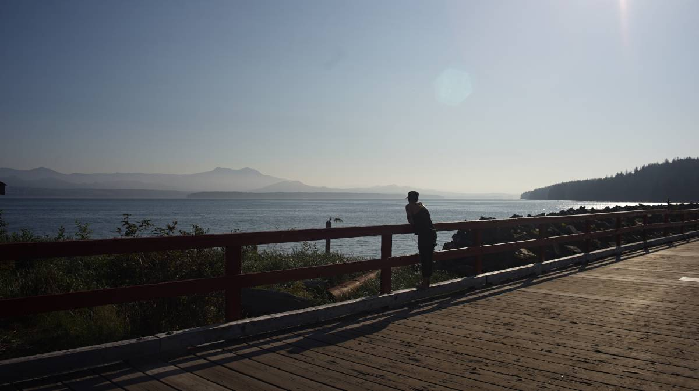
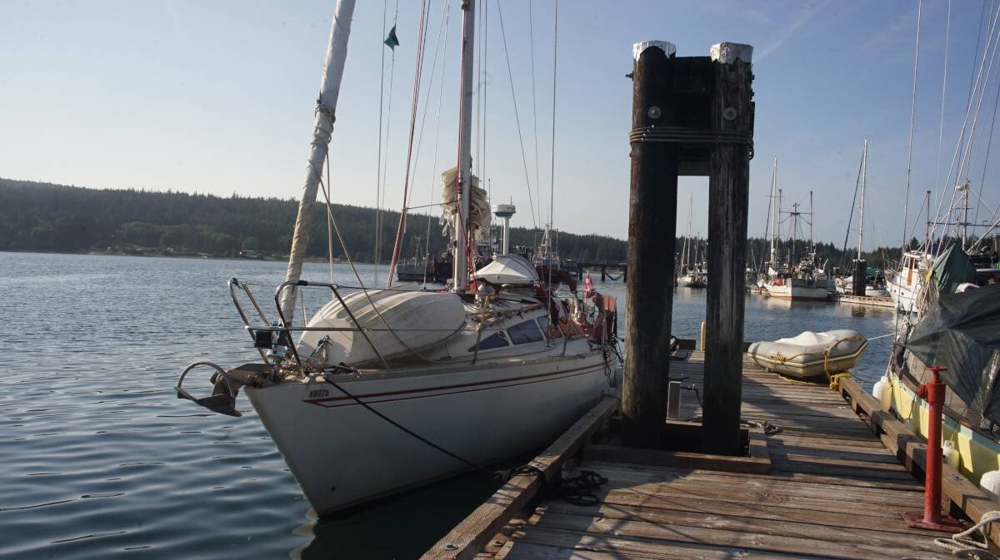
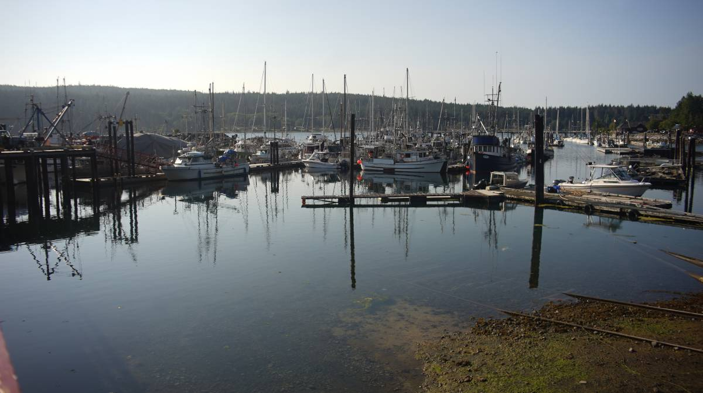
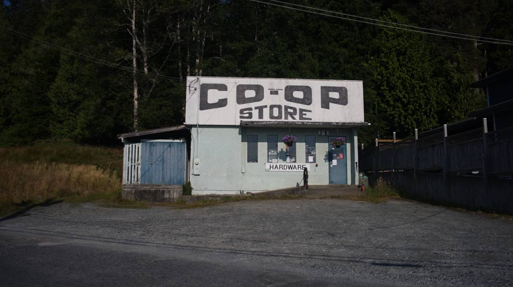

sointula
On August 6th 2024 we sailed onto the Sointula docks, on Malcom island. We crossed over from Port McNeill, a very short 3.5 nautical mile sail, in fact, Port McNeill is visible from the town docks.
We hadn't planned on stopping here, but while in Port McNeill we ran into our friends Lynda and Glenn on Commodore, and they recommended that we spend some time there, so, we did!
We left at 1130, rounded the kelp bank bordering the ledge, then pointed our bow towards the Malcom Island Lions Club docks. The morning fog bank was almost all gone. At this time of the year, the mornings here are always cold, grey, often foggy, then by 1300-1400, the blue sky takes over and the day becomes warm.
We weren't sure if there was going to be room, but there was plenty, slips here are first come first served, so we ducked into the south marina(the marina is divided into north and south, visiting boats can moor into both). A boat was cutting metal on the north docks, we hate the smell of burning metal and the sound was loud, so being away from that boat seemed like a good idea.
We registered at the front desk near the north marina, we love how they offer free bikes to visitors! We had heard about this, and when walking through town we saw many people riding bikes, both locals and visitors.
Sointula is a very unique place, In 1901, a group of Finnish settlers planned to set up a utopian socialist society known as the Kalevan Kansa, based on cooperative principles there.
On our first day there, we spent all afternoon in the tiny Sointula museum learning about the village that originated from a utopian Finnish commune. They never had a church, and one of their maxim was that women and men would be equal, the general store was the first consumer cooperative in BC.
On the second day, we went to fill our lpg tank in town(a local gave us a ride back), then went to hike the Mateoja Trail. The trail is 4km long, and leads to Big Lake. The trail is very well-kept, very pretty and easy-going. The trail goes through Melvin's Bog by way of an elevated path, and goes around Little Lake and Duck Pond. Several logs were cut and made into very beautiful moss-covered chairs.